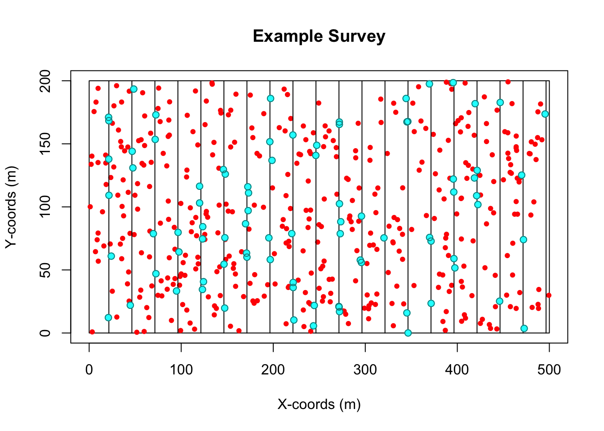
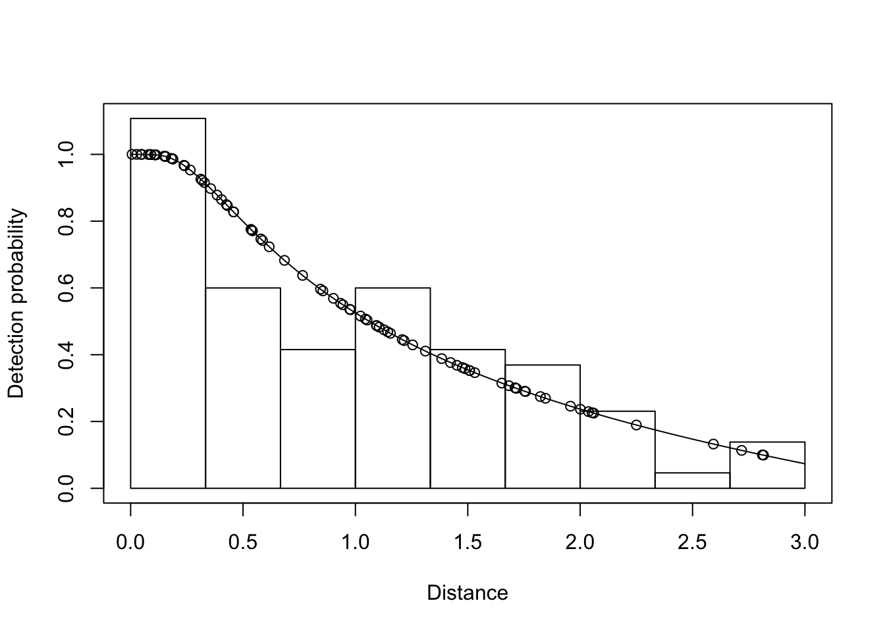
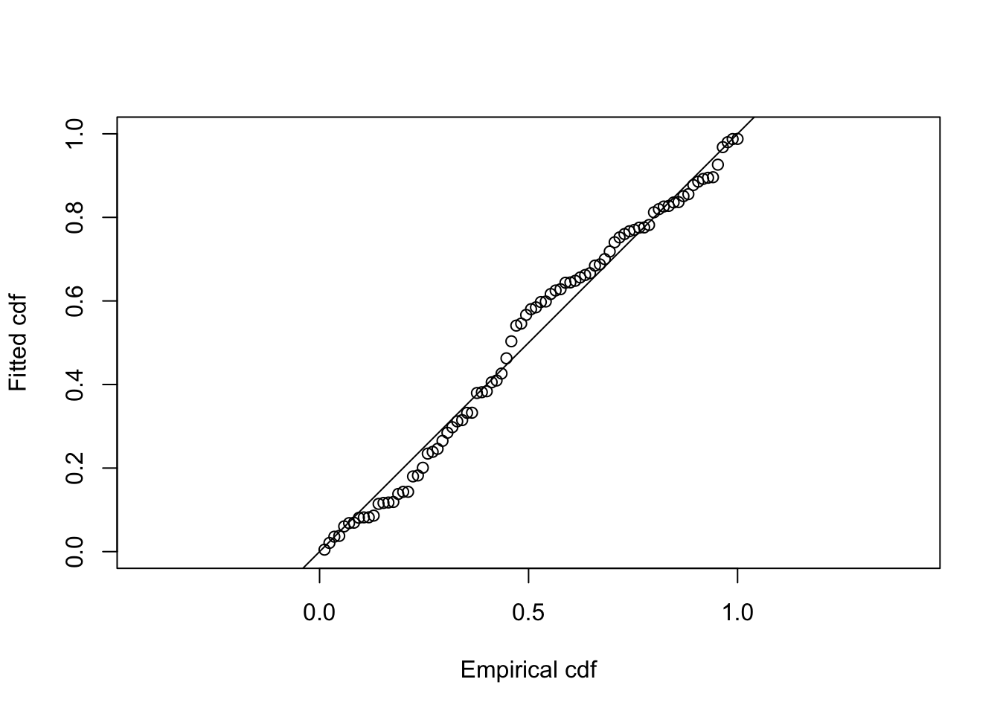

2 Create and analyse a simulated dataset
The purpose of this session is to refresh our memories of analysing straightforward distance sampling data. We will simulate a simple line transect dataset using the Distance simulation engine, so we know the true population size and detection function, and then analyze the data to see how close we are to the truth. The exercise can be completed using Distance for Windows or R (or both!).
Note that there will be a full session on the simulation capabilities of Distance later in the workshop, so we won’t try to tell you all about them here. Instead, we’ll give you the bare minimum of instructions you need to simulate a dataset, so you can focus on analyzing it.
2.1 Exercise using Distance for Windows
This section is for you if you want to use Distance for Windows. If you prefer to use R directly, skip to Exercise using R.
We’ll assume you are familiar with analysis of line transect data using Distance for Windows, but that you have not yet used the simulation engine. Hence the simulation instructions are quite detailed.
2.1.1 Simulate a dataset
In Distance for Windows, open the
Simulation examplesample project (ChooseFile | Open Project...and browse to theSample Projectsfolder withinMy Distance Projects; click on theSimulation exampleproject file and click onOpen.)Once the project is open, click on the
Simulationstab of theProject Browser, and click on the 2nd simulation, calledParallel Simulationand open theSimulation Detailswindow for this simulation (one way to do this is to choose the menu itemsSimulation | Simulation Details).Click the
Propertiesbutton that is just below theRunbutton - this opens theSimulation Propertieswindow.In the
Simulationtab, underNumber of repetitions, change the number 10 to 1, so it saysRepeat the simulation1times.
Simulation properties
In the
Misc.tab, tick the optionSave example dataset to fileDon’t look in any of the other tabs for now – they contain information about the true population size and detection function, and it’ll be more fun if you don’t know what these are until after you’ve analyzed the data!
Click
OKto close theSimulation Propertieswindow. ClickRunto run the simulation. After a pause while the simulation is running, theResultstab should go green.
You have now generated a simulated dataset, as a comma-separated text file (a “.csv” file). Have a look for it using the Windows File Explorer. The file will be located in the Simulation example.dat project folder (which in turn will be under My Distance Projects. In the project folder, look in the subfolder Simulation and within that in the subfolder Simulation2. You should see the file dist.data.2.csv
Simulation properties
- Copy this file into the
My Distance Projectsfolder, and rename itSimData.txtor some such. Whatever you call it, make sure there is only one dot “.” in its name, otherwise Distance is not going to want to import it (see later in these instructions).
2.1.2 Import the data into Distance
Back in
Distance, create a newDistance projectin theMy Distance Projectsfolder. (ChooseFile | New Project....) Give it whatever name you like (e.g.,Simulated dataset). In theNew Project Setup Wizardfollow all the default options, except onStep 4: Measurement Unitsyou should specify that Distances are in Meters, Transect lengths are in Meters and Areas are in Square meters. On the last step (Step 6: Finished), choose the option toProceed to Data Import Wizard. Click onFinish.In the
Data Import Wizard, inStep 2, choose to import the file containing the simulated data (SimData.txtor whatever you called it).In
Step 4, choose DelimiterCommaand tick the option toDo not import first row.In
Step 5, tick the optionColumns are in the same order as they will appear in the data sheet- this saves you having to tellDistancewhich column is which. ClickNextand thenFinish.Check the data has imported correctly using the
Datatab of theProject Browser. You may need to fix one annoying bug in the simulation engine: if there are any transects that have no observations then they don’t get exported to the .csv file. So, check that you have around 20 transects, and that the labels go sequentially from 1 to 20. If not, you’ll have to manually add a transect (with line length 200). If you don’t know how to do this, ask one of the instructors.
2.1.3 Analyze the data in Distance
Once you’ve checked the data imported correctly, you can analyze the data in the normal way in Distance. (There should be no need to truncate the data, as it was truncated in the simulation at 3m.)
You might want to try a few detection functions and use AIC to select among them. Check the goodness-of-fit of the final model you select.
Optional (if you know about the advanced variance options): once you’ve selected a detection function model, you might want to think about which of the encounter rate variance options best suits the simulated scenario, which was a set of systematic parallel transects.
After you’ve finished your analysis, note the abundance estimate and confidence interval, and then open up the simulation project again. The true abundance is given in the Simulation properties, Population tab, under Popultion size, Fixed N. How close is your estimate to the true value? Does the confidence interval contain the true value?
The true detection function is given under the Detectability tab. Did you select the true function? If not, why not, and does it matter?
2.2 Exercise using R
This section performs the same simulation in R. Of course the actual simulated sample size and distances won’t be the same, as they are different each time the simulation is run, but the scenario is the same.
You’ll need to have the DSsim and Distance libraries installed in the version of R you’re using. Ask an instructor if you don’t know how to do this.
2.2.1 Simulate a dataset
We’re going to use the DSsim package to do the simulation. Paste the code below into the RStudio console (or paste them into an R script window and then click Run to source them into the console).
library(DSsim)
library(shapefiles)## Loading required package: foreign##
## Attaching package: 'shapefiles'## The following objects are masked from 'package:foreign':
##
## read.dbf, write.dbf#Create study region
region <- make.region(coords = list(list(data.frame(x=c(0,0,500,500),y=c(0,200,200,0)))))
#Create population description
dens <- make.density(region = region, x.space = 8, y.space = 8, constant = c(10))
dens <- add.hotspot(dens, centre = c(100,50), sigma = 100, amplitude = 5)
dens <- add.hotspot(dens, centre = c(250,200), sigma = 50, amplitude = -5)
dens <- add.hotspot(dens, centre = c(300,70), sigma = 150, amplitude = 3)
pop.description <- make.population.description(region.obj = region, density.obj = dens,
N = c(500), fixed.N = TRUE)
#Specify detectability
det <- make.detectability(key.function = 'hr', scale.param = c(1.8), shape.param = c(3), truncation = 3)
#Create design
design <- make.design(transect.type = 'line', design.details = c('Parallel', 'Systematic'),
region.obj = region, spacing = 25)
analysis <- make.ddf.analysis.list(dsmodel = list(~cds(key = 'hn', formula = ~1),
~cds(key = 'hr', formula = ~1)),
method = 'ds', criteria = 'AIC', truncation = 3)
#Create simulation specification
sim <- make.simulation(reps = 1, single.transect.set = FALSE, region.obj = region,
design.obj = design, population.description.obj = pop.description,
detectability.obj = det, ddf.analyses.list = analysis)
#Run a single survey and plot it
survey.res <- create.survey.results(sim,dht.tables=TRUE)
plot(survey.res)
#Extract the data needed for distance sampling analysis
distance.data <- get.distance.data(survey.res)
region.table <- survey.res@region.table@region.table
sample.table <- survey.res@sample.table@sample.table
obs.table <- survey.res@obs.table@obs.tableYou are now ready to analyze the data!
2.2.2 Detection function modelling
You may not be familiar with the Distance package in R, so the following code walks you through a simple analyses of the data we just generated. If you are familiar with the Distance package, feel free to ignore this and do your own analysis.
The following code illustrates detection function modelling - feel free to try your own detection functions.
library(Distance)
hncos.simdata <- ds(distance.data,key="hn",adjustment="cos",truncation=3)## Starting AIC adjustment term selection.## Fitting half-normal key function## Key only model: not constraining for monotonicity.## AIC= 155.347## Fitting half-normal key function with cosine(2) adjustments## AIC= 157.218##
## Half-normal key function selected.## No survey area information supplied, only estimating detection function.unifcos.simdata <- ds(distance.data,key="unif",adjustment="cos",truncation=3)## Starting AIC adjustment term selection.## Fitting uniform key function with cosine(1) adjustments## AIC= 155.346## Fitting uniform key function with cosine(1,2) adjustments## AIC= 157.201##
## Uniform key function with cosine(1) adjustments selected.## No survey area information supplied, only estimating detection function.hrpoly.simdata <- ds(distance.data,key="hr",adjustment="poly",truncation=3)## Starting AIC adjustment term selection.## Fitting hazard-rate key function## Key only model: not constraining for monotonicity.## AIC= 159.136## Fitting hazard-rate key function with simple polynomial(2) adjustments## AIC= 158.812## Fitting hazard-rate key function with simple polynomial(2,4) adjustments## AIC= 160.17##
## Hazard-rate key function with simple polynomial(2) adjustments selected.## No survey area information supplied, only estimating detection function.Compare the models, for example using AIC. One can also plot the fitted functions, and look at goodness of fit – you should certainly do that for the detection function you select. As an illustration, here’s model checking code for the hazard rate function:
plot(hrpoly.simdata)
ds.gof(hrpoly.simdata)
##
## Goodness of fit results for ddf object
##
## Chi-square tests
## [0,0.333] (0.333,0.667] (0.667,1] (1,1.33] (1.33,1.67]
## Observed 24.0000000 13.000000 9.000000 13.0000000 9.0000000
## Expected 21.1957402 17.342874 13.097283 10.0025734 7.7076881
## Chisquare 0.3710119 1.087511 1.281772 0.8982255 0.2166759
## (1.67,2] (2,2.33] (2.33,2.67] (2.67,3] Total
## Observed 8.0000000 5.00000000 1.000000 3.0000000 85.000000
## Expected 5.9138386 4.44450203 3.194986 2.1005139 85.000000
## Chisquare 0.7359128 0.06942915 1.507977 0.3851796 6.553694
##
## P = 0.256 with 5 degrees of freedom
##
## Distance sampling Kolmogorov-Smirnov test
## Test statistic = 0.086215 P = 0.55252
##
## Distance sampling Cramer-von Mises test (unweighted)
## Test statistic = 0.10741 P = 0.549742.2.3 Abundance estimation
Having selected a function, we want to estimate abundance. To do this, we need to pass in the other data tables. Here’s example code, again using the hazard rate detection function.
abund<-ds(distance.data,key="hr",adjustment="poly",truncation=3,
region.table=region.table,sample.table=sample.table,obs.table=obs.table)## Starting AIC adjustment term selection.## Fitting hazard-rate key function## Key only model: not constraining for monotonicity.## AIC= 159.136## Fitting hazard-rate key function with simple polynomial(2) adjustments## AIC= 158.812## Fitting hazard-rate key function with simple polynomial(2,4) adjustments## AIC= 160.17##
## Hazard-rate key function with simple polynomial(2) adjustments selected.summary(abund)##
## Summary for distance analysis
## Number of observations : 85
## Distance range : 0 - 3
##
## Model : Hazard-rate key function with simple polynomial adjustment term of order 2
##
## Strict monotonicity constraints were enforced.
## AIC : 158.8118
##
## Detection function parameters
## Scale coefficient(s):
## estimate se
## (Intercept) -0.1705974 0.5433225
##
## Shape coefficient(s):
## estimate se
## (Intercept) 5.496784e-11 0.7214452
##
## Adjustment term coefficient(s):
## estimate se
## poly, order 2 -0.6998223 0.4492375
##
## Estimate SE CV
## Average p 0.4358497 0.09642113 0.2212256
## N in covered region 195.0213606 45.97619684 0.2357495
##
## Summary statistics:
## Region Area CoveredArea Effort n k ER se.ER cv.ER
## 1 region 1e+05 24000 4000 85 20 0.02125 0.00194919 0.09172659
##
## Abundance:
## Label Estimate se cv lcl ucl df
## 1 Total 812.589 194.8507 0.23979 508.3216 1298.983 99.85814
##
## Density:
## Label Estimate se cv lcl ucl df
## 1 Total 0.00812589 0.001948507 0.23979 0.005083216 0.01298983 99.85814The simulation scenario specified 500 individuals. How close is your estimate to the true value? Does your confidence interval contain the true value?
The true detection function was a hazard rate with no adjustment terms. Did you select the true function? If not, why not, and does it matter?